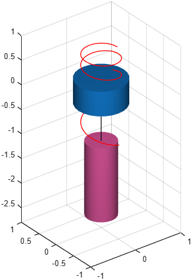

Cylindrical joint
Class phx.CylindricalJoint | Superclass: phx.base.Joint
phx.CylindricalJoint realizes a kinematic constraint with two
degrees of freedom: a translation along an axis and a rotation about the same axis — a shaft
free to slide and spin inside a sleeve. The axis is the local Z axis of the joint frame of each
connected body; the remaining four degrees of freedom are locked. It is a
phx.PrismaticJoint and a
phx.RevoluteJoint sharing one axis.
joint = phx.CylindricalJoint(bodyA,bodyB) creates a joint between
two bodies attached at their origins, with the joint axis aligned to the local Z axis of each body.
Set custom connection points and axis directions with PointA,
PointB, AxisA and
AxisB, or whole joint frames with
TransformA and TransformB; in every
case the joint axis is the local Z axis of each frame. Only the components perpendicular to the axis
place the bodies with respect to each other; an offset along the axis merely shifts the zero of the
free translation, and a roll about it the zero of the free rotation.
| Argument | Type | Description |
|---|---|---|
| bodyA, bodyB | phx.Body (scalar) | The two bodies connected by the joint. |
| Property | Type / Default | Description |
|---|---|---|
| TransformA | eye(4) | Homogeneous transformation of the joint frame relative to body A; its local Z axis is the joint axis. |
| TransformB | eye(4) | Homogeneous transformation of the joint frame relative to body B; its local Z axis is the joint axis. |
| AxisA | [0 0 1] | Joint-axis direction in the local space of body A; the Z axis of TransformA (dependent). |
| AxisB | [0 0 1] | Joint-axis direction in the local space of body B; the Z axis of TransformB (dependent). |
| PointA | [0 0 0] | Connection point in the local space of body A; the translation part of TransformA (dependent). |
| PointB | [0 0 0] | Connection point in the local space of body B; the translation part of TransformB (dependent). |
| EulerAnglesA | [0 0 0] | Euler angles (z→y→x order) of the joint frame relative to body A; the rotation part of TransformA (dependent). |
| EulerAnglesB | [0 0 0] | Euler angles (z→y→x order) of the joint frame relative to body B; the rotation part of TransformB (dependent). |
| Overlay | false | Draw the joint as an overlay (always on top). |
Reaction feedback (ForceA, TorqueA,
ForceB, TorqueB) and the
MutualCollisions switch (collisions between the connected bodies,
default false) are inherited from
phx.base.Joint.
AxisA and
AxisB alone fully describe it — the two frames need not agree
on how they are rolled about the axis, and the solver does not twist the bodies into line.
clf; view(3); axis equal; grid on; camlight headlight; sleeve = phx.Body("Type", "static", "Shape", {"Cylinder", "Radius", 0.5, "Height", 0.5}); shaft = phx.Body("Shape", {"Cylinder", "Radius", 0.3, "Height", 1.5}, ... "AngularVelocity", [0 0 40], "Color", [0.85 0.33 0.6]); % both degrees of freedom are free, so the shaft keeps spinning while it % slides out of the sleeve - a point on its rim traces a stretching helix phx.CylindricalJoint(sleeve, shaft); phx.Trace(shaft, "Point", [0.36 0 0.75], "Color", [1 0 0], "TracePoints", 400); sim = phx.Simulation; sim.step(0.6, 300, 1); delete(sim);
